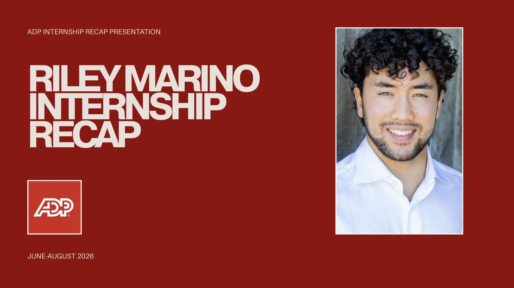
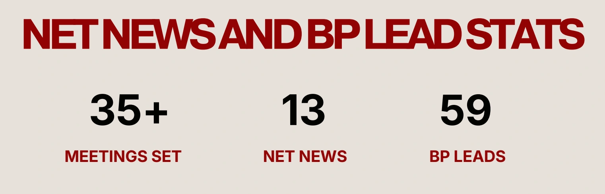
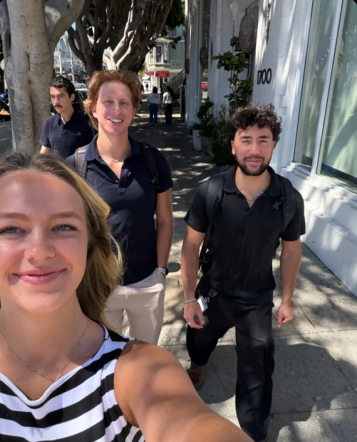

Sales Consulting · San Francisco · Summer 2026
ADP Final Presentation
One of the calls I remembered best lasted more than 25 minutes. I didn’t book the meeting.
I included that call in my internship recap alongside the deals I closed. It brought a question into focus for me: by the end of a conversation, did I understand the business well enough to suggest a next step worth taking?

Six Weeks of Outbound Sales
- Meetings booked
- 50+Through outbound outreach in six weeks
- Appointment setting
- 4thNationwide in Week 6, in a cohort of 116 interns
- Revenue-generating activities
- Top 15Nationwide among ADP interns
I closed multiple units, converted prospects into ADP clients, and earned a place in ADP’s Center of Excellence. The weekly competition also gave me a way to gauge consistency: I placed in the top 15 for four consecutive weeks leading up to my 4th-place finish.
Learning What to Ask on a Call
I studied payroll and human capital management so I could follow a prospect’s explanation of how they ran their business. Once I understood their process, I could ask a more useful follow-up: where did it take extra work, who dealt with that problem, and would it be worth another conversation?
Consistent dialing gave me enough conversations to see patterns. Some prospect lists produced stronger responses than others. Health and benefits outreach was harder for me than other product conversations. Missed appointments posed a different challenge: how much follow-up would help a busy person keep a meeting? Those experiences taught me to pay attention to where a conversation stalled and adjust what I asked or did next.

Building a Referral Relationship in the Field
On one field visit, we stopped at a CPA office that hadn’t been our original destination. We left a small gift. The accountant called back to discuss a partnership and potential referrals. That callback was one of my clearest examples of how a first visit could lead to a relationship beyond a single sale.
Bank huddles gave me another way to develop ADP’s referral network. Showing up regularly gave banking partners a familiar person to contact when a client had a payroll question. I learned to think about two people at once: the business owner who needed help and the partner putting their reputation behind the introduction.

What I Bring to Sales and Consulting
In sales, I can build a pipeline and carry opportunities through to a close. Booking meetings took persistence. Converting prospects into clients required me to learn their operations, recognize where ADP could help, and earn agreement on a specific next step.
In consulting, I bring that same discipline to discovery. I can sit down with someone who knows their business better than I do, ask how their process works, and use their answers to shape a recommendation. That is the skill I took from both the accounts I won and the 25-minute call that ended without a meeting.
Back to Strategy & Design